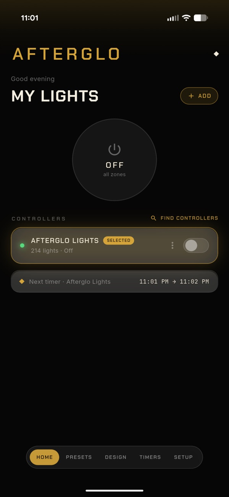
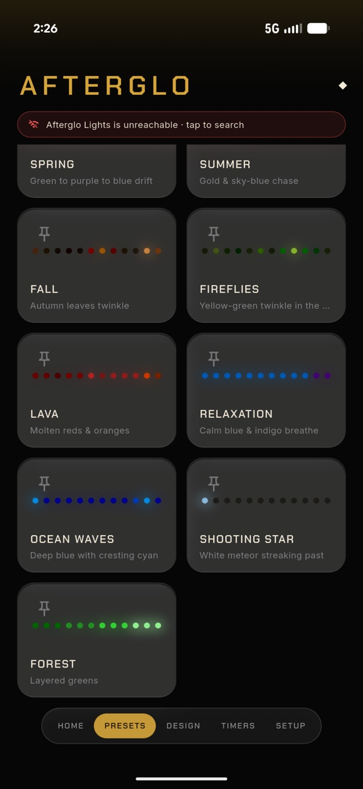
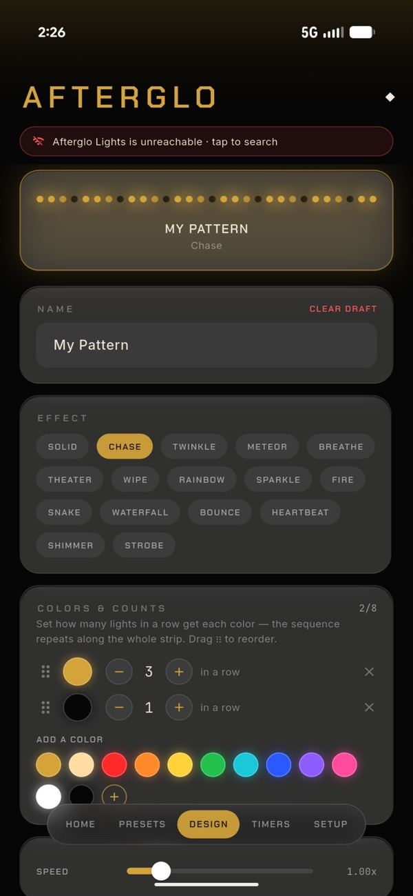
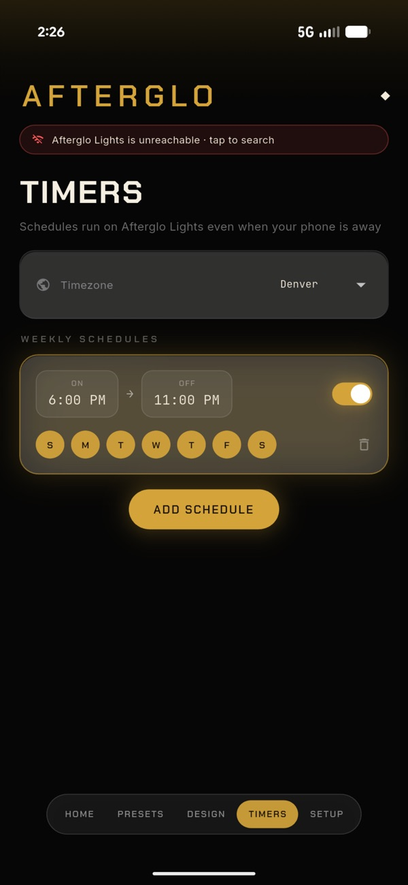

The AFTERGLO app is how you run AFTERGLO permanent roofline lighting from your phone. It turns the controllers on, picks the color, sets the schedule, and queues up the music-synced shows for Halloween, Christmas, and the rest of the calendar.
Part
Homeowner app, iOS and Android
Built with
Flutter, Firebase
Status
On the App Store and Google Play
Screens

Home

Presets

Pattern designer

Timers
Screenshots from the App Store listing.
Specifications
Screens
Home, presets, pattern builder, timers and schedules, settings
AI presets
Generates presets from a description
Sharing
Effects shared through Firebase
Discovery
Finds every controller on the home Wi-Fi the first time it opens
Schedules
On and off times by day of the week, or follow sunset and sunrise. Holidays get their own schedule.
Permissions
Five network permissions and nothing else. The device list stays on the phone.